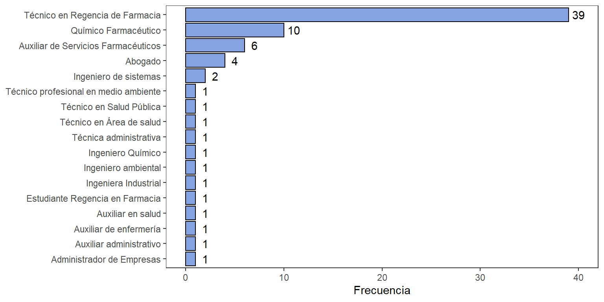
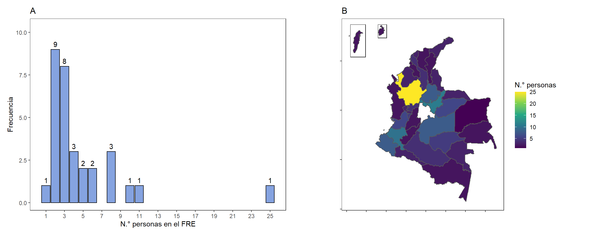

4.2 Estructura organizacional
La estructura organizacional de los FRE departamentales es un elemento crítico para evaluar las condiciones y características actuales de cada ente territorial, en virtud de su capacidad para cumplir todas las funciones expuestas en el Artículo 2° de la Resolución 1479 del 2006. Por este motivo, en la Figura 4.2 y 4.3 se muestran los diferentes profesionales que conforman los equipos de trabajo de todos los FRE a nivel nacional.
En el panel izquierdo de la Figura 4.2 se observa especialmente la distribución de los perfiles profesionales de los encargados de cada FRE departamental. Se evidencia que la mayoría de departamentos cuentan con Químicos Farmacéuticos como responsables encargados de los entes territoriales. De manera similar, se observan Técnicos en Regencia en Farmacia ocupando este cargo a nivel territorial, cuyos perfiles permanecen en la misma línea profesional de trabajo, referente al conocimiento y habilidades en la gestión de los medicamentos. Lo anterior, tiene ventajas en los procesos internos del FRE, ya que permite un adecuado desarrollo de las funciones principales del ente territorial y la resolución de problemas técnicos es más probable.
Por otro lado, se evidencia un grupo de profesionales diferentes a los anteriores, pero denominados como profesionales de la salud, cuyas competencias pueden relacionarse de alguna manera con la adecuada administración y gestión de los medicamentos. Por el contrario, se deben resaltar (4) profesionales, encargados de algunos FRE, que no poseen este tipo de habilidades idóneas y apropiadas, desde su formación profesional, lo que podría resultar en dificultades técnicas para el desarrollo interno de las entidades territoriales.
Para el análisis del recurso humano de los FRE se tuvieron en cuanto dos clasificaciones:
De acuerdo con sí la persona era la encargada del FRE o un apoyo del(a) encargado(a).
De acuerdo con la carga laboral relacionada con actividades del FRE. Se consideró como personal directo a aquel que desempeña más de un 50% de su tiempo en actividades relacionadas al FRE y personal asociado como aquel que desempeña menos del 50% de su tiempo en estas actividades FRE.
Figura 4.2: Perfil de profesional de encargados de los FRE.

En la Figura 4.3 se observan los perfiles profesionales del personal de apoyo de los FRE a nivel nacional. Principalmente, se destaca una gran mayoría de Técnicos en Regencia en Farmacia (39) seguido de un grupo menor de profesionales Químicos Farmacéuticos (10), apoyando en las actividades de los FRE departamentales. Esto demuestra que gran parte de los entes territoriales están alineados con lo expuesto en el Artículo 3° de la Resolución 1479 del 20062, donde mencionan que los Químicos Farmacéuticos y Tecnólogos en Regencia en Farmacia son profesionales considerados como personal calificado para el cumplimiento de las funciones requeridas por el FRE.
Figura 4.3: Perfil de profesional de personal asociado a los FRE.
Adicionalmente, la Figura 4.3 también muestra otro tipo de profesionales de apoyo al encargado del FRE, diferente al personal calificado mencionado anteriormente. Este factor podría brindar ventajas al equipo de trabajo del FRE particularmente, en función de la multidisciplinariedad. La participación de distintas disciplinas puede entregar más conocimientos y alternativas en el desarrollo laboral interno de cada FRE departamental. No obstante, es importante aclarar que ningún FRE debería dejar de contar con la participación del personal calificado, estipulado en el Artículo 3° de la Resolución 1479 del 20062.
El número de personas que trabajan en cada FRE, es otro elemento crítico para la evaluación de condiciones y características actuales de cada ente territorial, en virtud de su capacidad para cumplir todas las funciones expuestas en el Artículo 2° de la Resolución 1479 del 20062. La Figura 4.4 exhibe la frecuencia absoluta del número de personas en los entes territoriales del país que se encuentran asociados a los FRE. Es decir, la cantidad de profesionales que conforman los equipos de trabajo de todos los FRE departamentales. Cabe aclarar que no todo el recurso humano realiza actividades exclusivas del FRE, sino que también realizan actividades propias de las secretarías departamentales en Salud.
Figura 4.4: N.° de personas que trabajan en el FRE. (A) Conteo de FRE por número de personas. (B) Mapa con número de personas por departamento.
Según lo anterior, se evidencia que los FRE cuentan con pocas personas vinculadas en su equipo de trabajo. En la gran mayoría de FRE se tienen hasta tres personas para el desempeño del mismo, y en nueve FRE sólo se tienen a 2 personas vinculadas. Se tienen pocos entes territoriales que mantienen un grupo de trabajo grande con profesionales interdisciplinarios.
Otra razón para tener un personal reducido en el funcionamiento integral del FRE puede deberse a que las funciones que tienen designadas en la Resolución 1479 de 2006 están distribuidas en diferentes dependencias de las Secretarías, Institutos o direcciones Departamentales de Salud, lo que reduce la necesidad de talento humano en los propios FRE.
El tipo de contrato que los diferentes entes territoriales emplean para vincular al personal es otro factor crítico en el cumplimiento de las funciones de los FRE. De acuerdo con lo anterior, la Figura 4.5 muestra la proporción del tipo de vinculación del personal del FRE a nivel nacional, diferenciándose entre personal directo y personal vinculado. Este último, tiene cierta exclusividad con el FRE al destinar más del 50% en actividades de este, y de acuerdo a sus obligaciones contractuales, también adelanta otras actividades con otras dependencias de la dirección departamental de salud.
A partir de la Figura 4.5 se puede notar una tendencia importante en todos los FRE a nivel nacional, referente al tipo de vinculación por medio de Contrato Por Prestación De Servicios (CPS). La gran mayoría, precisamente, el 98%, del personal de apoyo de los FRE está relacionado con contratos CPS. Estas personas son vinculadas al ente territorial para cumplir algunas actividades internas del FRE, pero también tienen otras actividades laborales, fuera del FRE, según sus obligaciones contractuales. Por el contrario, el personal directo al funcionamiento del FRE, cuya atención es completa en las labores internas del FRE, está relacionado en su mayoría, por nombramiento, es decir, como servidor público. En muchos departamentos, la persona encargada del FRE es el único profesional nombrado, mientras que el resto del equipo de trabajo del FRE, guardan una predisposición para ser relacionados como contratistas, por medio de CPS.
Figura 4.5: Tipo de vinculación al FRE.
La tendencia a vincular al personal mediante contratación por prestación de servicios puede interferir y generar inconvenientes en el desarrollo continuado de los FRE, lo que puede afectar la funcionalidad en algunas actividades críticas para el cumplimiento de sus objetivos de creación. En algunos casos, este tipo de personas vinculadas por CPS, dejan de laborar los primeros meses del año, ya que su contrato en las vigencias pasadas, y debido a barreras administrativas, no son contratadas hasta el segundo bimestre del año. El personal nombrado en muchos casos es la persona encargada del FRE, cuyos temas operativos no están dentro de su cotidianidad y no son fáciles cumplirlos. Por tal motivo estas actividades operativas se dejan de hacer en el territorio hasta que sea contratado el personal de apoyo. Como es el caso de la consolidación de los informes que deben ser enviados mensualmente al FNE.
Adicionalmente, en la Tabla 4.1 se observa la proporción del tipo de vinculación del personal del FRE, discriminado por cada región del país. Los departamentos que se tuvieron en cuenta en cada región fueron los siguientes:
- Amazonía: Amazonas, Caquetá, Guainía, Putumayo, Vaupés, y Vichada.
- Caribe: Atlántico, Bolívar, Cesar, Córdoba, La Guajira, Magdalena, San Andrés y Sucre.
- Central: Antioquia, Boyacá, Huila, Norte De Santander, Santander, y Tolima.
- Eje cafetero: Caldas, Quindío y Risaralda.
- Orinoquía: Arauca, Casanare, Guaviare y Meta.
- Pacífico: Cauca, Chocó, Nariño y Valle del Cauca.
A partir de esta información, se observa que en 5 regiones predomina la Contratación por Prestación de Servicios respecto al Nombramiento del personal del FRE. Además, se logra observar que en las regiones más alejadas de la capital Bogotá D.C., existe una prevalencia mucho más fuerte con esta CPS. Por consiguiente, los problemas mencionados anteriormente relacionados con la CPS, se pueden notar con mayor evidencia en estos territorios apartados del centro del país.
| Región | Nombramiento | Contratación |
|---|---|---|
| Amazonía | 21.43% | 78.57% |
| Caribe | 42.86% | 57.14% |
| Central | 41.38% | 58.62% |
| Eje Cafetero | 58.33% | 41.67% |
| Orinoquía | 45.45% | 54.55% |
| Pacífico | 19.23% | 80.77% |